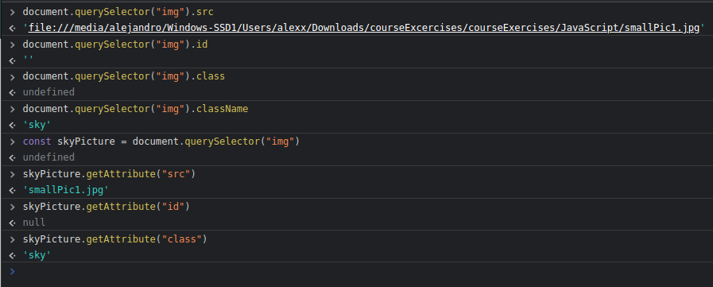
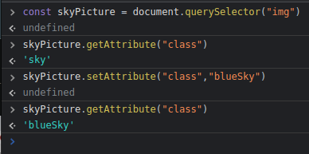
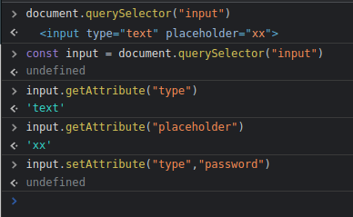
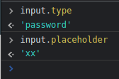

We can access attributes with document.querySelector/ All("")
But there are also methods we can use.
There can sometimes be minor differences between how we access an attribute, like with href when we may get a slightly longer or shorter href file path.
We can also modify an attribute with setAttribute(" , ").
We need a comma to separate the attribute and the new value.
We can modify an input type this way too.
Here we have an input for text, we access its attributes, type and placeholder first.
We then modify the tpe to password.
And as we've seen, there are multiple ways to acess and modify our attributes!
